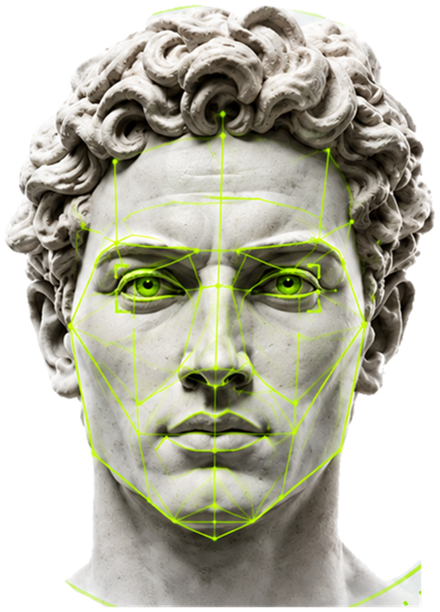
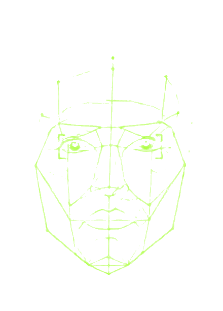

Пропорции лица
Соотношение верхней, средней и нижней третей, ширина лица к высоте, положение глаз и линии губ.
ПропорцииЗагрузите фото — и получите AI-скор с разбором по трём показателям: гармония лица, пропорции и симметрия. Плюс персональный план, что улучшить первым и какой шаг даст заметный результат быстрее всего. Попробуйте — это занимает минуту.


AI-скор
Визуальная оценка по готовому фото
0/100
Уровень Chadlite
Пример разбора. Ваш результат считается по вашему фото.
Четыре шага, всё внутри Telegram.
Подойдёт обычный снимок с телефона: лицо анфас, дневной свет, без фильтров и очков. Чем ровнее свет, тем точнее алгоритм видит черты.
Разбор идёт по опорным точкам лица: соотношения третей, ширина к высоте, отклонения половин друг от друга. Из них складываются три показателя AI-скора.
Не просто цифра: видно, какие черты вытягивают оценку вверх, а какие тянут вниз, и насколько сильно каждая влияет на общее впечатление.
Шаги отсортированы по отдаче: что даст результат за месяц, а что требует года. Без осуждения и без обещаний чуда.
AI-скор складывается из трёх показателей — гармонии лица, пропорций и симметрии. Ниже — что за ними стоит и какие черты на них влияют.
Соотношение верхней, средней и нижней третей, ширина лица к высоте, положение глаз и линии губ.
ПропорцииНасколько половины лица совпадают. Идеальной симметрии нет ни у кого — важна степень отклонения.
СимметрияЧёткость контура и угол челюсти. Черта, которую сильнее всего меняет процент жира и отёчность.
ПропорцииРовность тона, следы усталости, воспаления. Самая подвижная характеристика: заметно меняется за недели.
ГармонияФорма стрижки относительно формы лица, линия роста волос, густота и форма бровей.
ГармонияКак черты работают вместе. Лицо с «неидеальными» отдельными параметрами часто читается лучше суммы частей.
ГармонияШкала, по которой в сообществе принято раскладывать оценку внешности. Ниже — что обычно стоит за каждым диапазоном и какой шаг на этом уровне даёт больше всего.
Куда попадает AI-скор
Пример из разбора выше — 74, это Chadlite
| Уровень | В сообществе | AI-скор | Что за этим обычно стоит |
|---|---|---|---|
| Верхний | Chad | 85–100 | Сильные пропорции, чёткий контур, ровная кожа. Внешность читается как выразительная почти на любом фото. |
| Высокий | Chadlite | 70–84 | Гармоничные черты, одна-две зоны слабее остальных. Часто вопрос ухоженности, а не строения. |
| Выше среднего | High-tier normie | 55–69 | Черты в норме, но общее впечатление размывают отёчность, усталая кожа или неподходящая причёска. |
| Средний | Normie | 45–54 | Диапазон, в который попадает большинство. Ничего не выделяется ни в плюс, ни в минус. |
| Ниже среднего | Low-tier normie | 30–44 | Несколько зон одновременно работают против: кожа, вес, причёска, состояние зубов. |
| Начальный | Старт | 1–29 | Как правило, речь не о строении лица, а о накопленных бытовых факторах — сне, питании, уходе. |
Шкала — не медицинская и не объективная: это договорённость сообщества, удобная для разговора о конкретных чертах. Балл описывает фотографию, а не человека, и в жизни впечатление сильно правят мимика, голос и осанка, которых на снимке нет.
Отчёт приходит в Telegram сразу после загрузки фото.
Не одна цифра, а разбор по каждому показателю: видно, что вытягивает оценку вверх, а что тянет вниз.
Куда ваш балл попадает в тир-листе и что обычно стоит за этим диапазоном.
Конкретные шаги под ваше лицо, а не общий список из интернета. Отсортированы по отдаче: что заметно за месяц, что за полгода, а что не решается без специалиста.
Через время загружаете новое фото и сравниваете: видно, сдвинулись ли черты, над которыми вы работали.
Внешность, луксмаксинг, глоу-ап — за этими словами стоит одно желание: выглядеть лучше, чем вчера. Само слово «луксмаксинг» пришло из англоязычных форумов и означает осознанную работу над собственной внешностью: не разовую смену причёски, а системный подход, где человек разбирает своё лицо и фигуру по составляющим и подтягивает те, которые поддаются изменению. За последние пару лет тема вышла далеко за пределы нишевых сообществ, и вместе с ней вырос запрос на понятную оценку: с чего начинать и что вообще менять.
Оценка лица, луксмаксинг-разбор, рейт по фото — это всё про одно: попытка разложить общее впечатление на конкретные параметры. Вместо расплывчатого «выгляжу так себе» появляется список: пропорции лица в норме, симметрия хорошая, контур челюсти размыт, кожа уставшая. С таким списком уже можно работать, потому что видно, куда прикладывать усилия.
Именно поэтому оценка внешности по фото, луксмаксинг и разбор черт стали для многих одной и той же точкой входа в тему. Балл сам по себе мало что значит, ценность в разборе: он показывает, какая черта тянет впечатление вниз сильнее остальных и насколько она вообще поддаётся изменению.
Алгоритм находит на снимке опорные точки — уголки глаз, крылья носа, линию губ, границы челюсти — и считает расстояния между ними. Дальше эти соотношения сравниваются с усреднёнными по большой выборке лиц. Отдельно оценивается состояние кожи и волос, которое читается по текстуре снимка.
Точность напрямую зависит от фотографии. Лицо анфас, дневной свет, нейтральное выражение, без очков, без фильтров и без ракурса снизу — тогда разбор говорит о вашем лице, а не об условиях съёмки. Снимок в полумраке или с широкоугольной камеры телефона вблизи искажает пропорции настолько, что оценка теряет смысл.
Таблица — это шкала, разбитая на диапазоны. В сообществе исторически считают по десятибалльной и подписывают уровни своими словами — Chad, Chadlite, normie. AI-скор в боте считается по стобалльной, поэтому в таблице ниже приведены оба ориентира. Придумали шкалу не учёные, а сообщество, и относиться к ней стоит соответственно: как к общему языку, а не к диагнозу.
Полезнее всего в таблице не сам балл, а то, что на разных уровнях работают разные вещи. В нижней и средней части шкалы большой прирост дают простые, бытовые резервы. В верхней части они уже выбраны, и каждая следующая десятая доля стоит несопоставимо дороже. Поэтому уровень важен не как ярлык, а как подсказка, куда вообще есть смысл прикладывать усилия.
Полезно разделить черты на три группы по горизонту: то, что меняется за недели, то, что требует месяцев, и то, что не меняется вообще без участия врача. В третью группу попадает заметно меньше, чем принято думать, — строение костей и прикус, а не всё лицо целиком.
Большинство людей, которые приходят в тему, недооценивают первые две группы и переоценивают третью: решают, что дело в строении лица, хотя резерв лежит в куда более простых вещах. Разбор как раз показывает, в какой из трёх групп у вас находится основной запас.
Советы из общих подборок работают плохо по простой причине: они написаны для среднего человека, а вы не средний. У одного оценку тянет вниз отёчность, у другого — форма стрижки, у третьего — процент жира. Одна и та же рекомендация в первом случае даст заметный сдвиг, а во втором — ничего.
Поэтому в разборе план собирается под конкретное лицо и под то, какие черты у вас оказались слабее остальных. Шаги идут в порядке отдачи, чтобы не тратить полгода на то, что меняет картину на доли балла. Сам план открывается по подписке — вместе с результатами разбора.
Рейт, луксмаксинг-оценка, AI-скор — слова разные, смысл один. И у всех у них общее ограничение: балл описывает одну фотографию, снятую в один момент. В живом общении впечатление формируют мимика, голос, темп речи и осанка — ничего из этого на снимке нет. Люди с одинаковой оценкой по фото в жизни воспринимаются совершенно по-разному.
Поэтому здоровый способ пользоваться оценкой — брать из неё список задач, а не вердикт о себе. Если цифра портит настроение вместо того, чтобы давать направление, от неё стоит отойти: смысл в разборе, а не в рейтинге.
Вокруг темы накопился слой откровенно вредных советов. Bone smashing — удары по костям лица «ради рельефа» — это травмы, а не ремоделирование. Жёсткое голодание ради скул бьёт по коже, волосам и гормонам, отбирая больше, чем даёт. Препараты и инъекции без назначения врача — отдельная категория риска.
Мьюинг, то есть положение языка у нёба, обсуждают чаще всего. Держать язык у нёба и не сутулиться полезно для осанки, но заменить ортодонтическое лечение это не может, а обещания изменить взрослому человеку форму челюсти таким способом доказательной базы не имеют.
Само слово собрано из английских looks (внешность) и maxing (доводить до максимума). В русском прижилось как «луксмаксинг», реже пишут «луксмакс» или латиницей. Значит оно ровно то, что и составные части: выжать максимум из данных, которые есть, — не сменить лицо, а привести в лучшую форму то, что имеется.
Отсюда и деление в сообществе на два уровня работы. Первый — всё, что касается ухода, состава тела, стрижки и стиля. Второй — вмешательства, от ортодонтии до пластики. Подавляющее большинство того, что реально сдвигает оценку, лежит на первом уровне, а обсуждают чаще второй.
В сообществе исторически прижилась десятибалльная шкала, где 5 — середина, а всё выше 8 считается верхом. Она удобна для разговора, но грубая: между 6 и 7 помещается слишком много разных лиц, и любое изменение внутри диапазона просто не видно.
AI-скор считается по стобалльной шкале по той же причине, по которой температуру меряют не в «тепло-холодно». Сотня даёт достаточно делений, чтобы повторный замер через два месяца показал сдвиг, а не ту же самую цифру. Перевод простой: разделите балл на десять и получите привычную десятибалльную оценку, 74 из 100 — это 7,4.
Луксмаксинг женский — отдельная большая тема, и ищут её не реже мужской. Выросла она на мужских форумах, поэтому большинство таблиц в сети написаны под мужское лицо, а женщинам достаётся тот же текст с заменённым родом. Это не работает: набор черт, который тянет оценку вверх, отличается. У мужчин вес смещён к линии челюсти и ширине лица, у женщин — к пропорциям средней трети, форме губ и глаз.
Луксмаксинг для женщин при этом идёт по той же шкале: деление на диапазоны не меняется. Меняется, какая черта на каком уровне становится узким местом. Поэтому запрос «женская таблица луксмаксинга» по сути про акценты внутри тех же уровней, а не про отдельную систему координат.
В мужской версии темы разговор почти всегда сводится к линии челюсти и скулам. Причина понятная: это черты, которые сильнее прочих реагируют на процент жира, и потому дают самое заметное «до и после» на фотографиях, которыми полны тематические сообщества.
Обратная сторона в том, что вокруг них же скопилось больше всего вредных советов. Таблица луксмаксинга мужская ничем не отличается по диапазонам — отличается только тем, что на средних уровнях узким местом чаще оказывается именно состав тела.
Луксмаксинг оценка внешности бесплатно — один из самых частых запросов, и ответ честный: сам балл и раскладка по трём показателям бесплатны, разбор приходит после загрузки фото. Платной является вторая часть — персональный план и повторный замер.
Так что «луксмаксинг оценка бесплатно» — это ровно то, что вы получаете на входе. Логика тут не в том, чтобы придержать очевидное. Балл показать несложно, а вот собрать под конкретное лицо порядок шагов, где на первом месте стоит то, что даст результат быстрее всего, — это и есть работа, за которую берут деньги. Общие списки из интернета бесплатны везде, но именно поэтому и не работают.
Под «упражнениями» в теме понимают две разные вещи. Первая — мьюинг, положение языка у нёба. Вторая — гимнастика для мимических мышц, обещающая подтянуть овал. По обеим доказательная база слабая: у взрослого человека форма челюсти определяется костью, а не тонусом мышц, и упражнениями её не переставить.
Что действительно меняет контур лица — это процент жира и отёчность, то есть сон, питание и режим. Скучно, зато проверяемо: результат виден на повторном фото через несколько недель. Отдельно стоит помнить, что упражнения с усилием на челюсть, жевательные тренажёры и тем более удары по лицу приводят к проблемам с суставом, а не к рельефу.
У темы свой словарь, во многом англоязычный, и без него половина обсуждений нечитаема. Луксмаксинг слова и термины, которые встречаются чаще всего:
Луксмаксинг сайт, оценка в боте, приложение — сервисов, которые ставят балл по фото, в сети много, и качество у них очень разное. Разница в основном в трёх вещах. Первая — считает ли сервис геометрию лица или просто выдаёт случайное число под видом анализа. Вторая — объясняет ли, из чего сложился балл, или показывает голую цифру. Третья — что происходит с загруженным снимком после оценки.
Хороший сайт луксмаксинга отличается от пустышки простой проверкой: пройти тест дважды с двумя разными своими фотографиями. Осмысленный сервис даст близкие баллы, потому что лицо одно и то же. Если разброс большой, значит считается не лицо, а что-то другое.
Тем, кто хочет конкретики вместо общих слов: что именно менять и в каком порядке. Тем, кто уже начал что-то делать и хочет понять, куда двигаться дальше. И тем, кто просто хочет посмотреть на себя со стороны — глазами алгоритма, без комментариев знакомых.
Осознанная и системная работа над внешностью: лицо и фигура разбираются по отдельным характеристикам, и человек подтягивает те из них, которые поддаются изменению — от ухода за кожей и стрижки до состава тела.
Алгоритм находит на снимке опорные точки лица и считает соотношения между ними: пропорции третей, симметрию, линию челюсти. Отдельно оценивает состояние кожи и волос. На выходе — балл и разбор по каждой характеристике.
Шкала, разбитая на диапазоны, которой в сообществе пользуются для разговора об оценке: Chad, Chadlite, normie и так далее. Она не медицинская и не объективная — это общий язык, а не диагноз. Полезна тем, что на разных уровнях работают разные шаги.
Слово собрано из английских looks (внешность) и maxing (доводить до максимума). Означает системную работу над внешностью в рамках того, что дано: не смену лица, а приведение в лучшую форму того, что есть — от ухода и состава тела до стрижки и стиля.
Алгоритм находит на снимке опорные точки лица и считает соотношения между ними, затем сравнивает их с усреднёнными по большой выборке. На выходе AI-скор по стобалльной шкале и раскладка по трём показателям: гармония лица, пропорции, симметрия.
Шкала и деление на диапазоны одинаковые для всех. Отличается то, какая черта на каком уровне становится узким местом: у мужчин вес смещён к линии челюсти и ширине лица, у женщин — к пропорциям средней трети, форме губ и глаз.
Разбиение оценки на уровни. В сообществе прижилась десятибалльная шкала, AI-скор считает по стобалльной — в ней больше делений, поэтому повторный замер показывает сдвиг, а не ту же цифру. Перевод простой: 74 из 100 это 7,4 из 10.
Качеством того, что считается. Одни сервисы разбирают геометрию лица и объясняют, из чего сложился балл, другие показывают голую цифру. Простая проверка: пройдите тест дважды с разными своими фотографиями — у осмысленного сервиса баллы будут близкими.
Лицо анфас, дневной свет, нейтральное выражение, без очков, фильтров и съёмки снизу. Обычного снимка с телефона достаточно. Кадр в полумраке или с близкого расстояния искажает пропорции, и разбор теряет смысл.
Алгоритм надёжно считает геометрию — пропорции и симметрию. Восприятие красоты этим не исчерпывается: оно зависит от культуры, мимики и контекста, которых на фото нет. Разбор по чертам полезнее, чем сама цифра.
Да, и в большинстве случаев резерв тут больше, чем кажется: значительная часть того, что формирует впечатление, меняется без всяких вмешательств. Какие именно черты поддаются в вашем случае и в каком порядке за них браться — это и показывает разбор.
Держать язык у нёба и не сутулиться полезно для осанки, но доказательной базы, что это меняет форму челюсти у взрослого человека, нет. Ортодонтические задачи решает ортодонт.
Да. Удары по костям лица приводят к травмам, а не к рельефу. Жёсткое голодание ради скул бьёт по коже, волосам и гормонам. Препараты без назначения врача — отдельный риск. Ничего из этого не входит в разумную работу над внешностью.